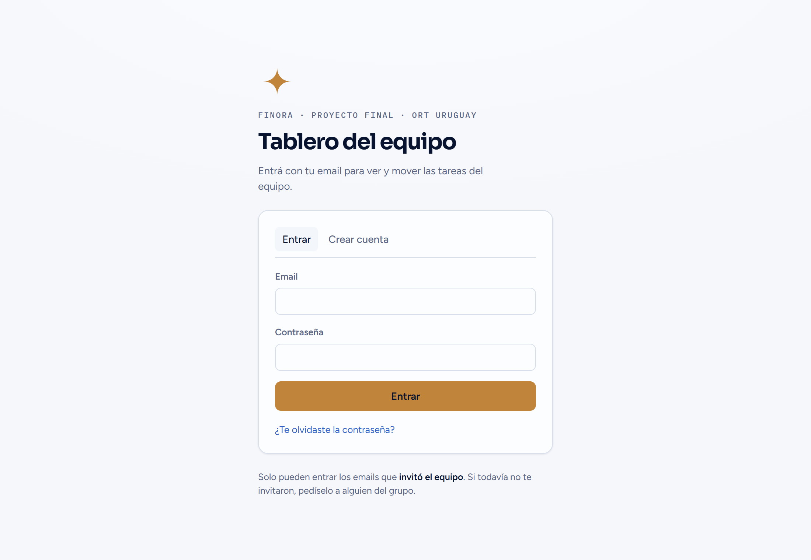
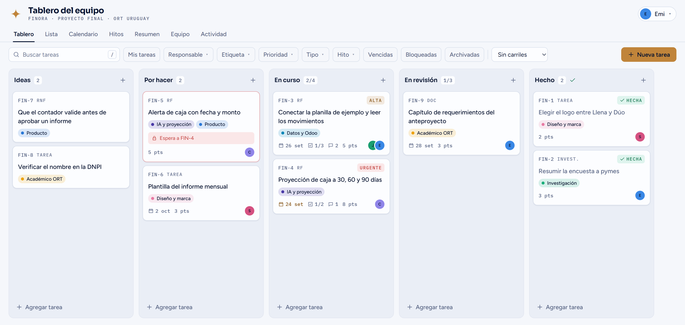
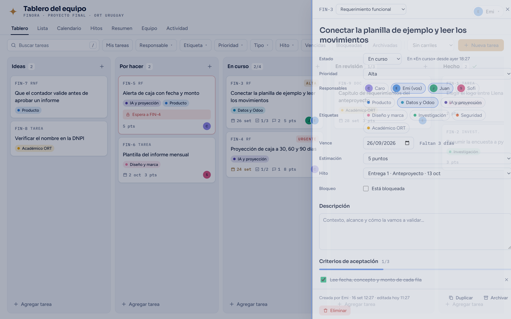

Qué hay que hacer, quién lo hace y para cuándo, todo en un solo lugar.
Lo hacés una sola vez. Después entrás con tu email y tu contraseña.
Alguien del equipo tiene que agregar tu email en Equipo → Invitar al equipo. Sin eso podés crear la cuenta, pero no vas a ver nada.
Abrí el link y tocá Crear cuenta. Usá el mismo email que invitaron y una contraseña de al menos 8 caracteres.
Te llega un correo con un link para confirmar la cuenta. Abrilo. Si no aparece en unos minutos, fijate en spam.
Volvé al link y tocá Entrar. La primera vez elegís tu apodo, tu rol y tu color: así te ve el resto en las tareas.

¿Te olvidaste la contraseña? En la pantalla de entrada tocá “¿Te olvidaste la contraseña?”, escribí tu email y te llega un link para elegir una nueva.
Cada tarjeta es una tarea. Avanza de izquierda a derecha a medida que la trabajamos. Todo lo que cambia se guarda solo y el resto lo ve al instante.

| Columna | Qué va ahí |
|---|---|
| Ideas | Lo que se nos ocurrió y todavía no decidimos hacer. |
| Por hacer | Lo que acordamos hacer y ya se puede empezar. |
| En curso | Lo que alguien está haciendo ahora. Límite: 4 tareas a la vez. |
| En revisión | Lo terminado, esperando que otra persona lo revise. Límite: 3. |
| Hecho | Lo revisado y cerrado. Cuenta para el avance en el Resumen. |
El número al lado del nombre (por ejemplo 2/4) muestra cuántas tareas hay y el límite. Se pone cuando la columna está llena y roja cuando se pasa: primero terminamos algo, después empezamos otra cosa.
Cada tarea tiene un número propio. Usalo para nombrarla en el grupo: “ya subí lo de la FIN-12”.
RF requerimiento funcional, RNF no funcional, Tarea, Bug, Invest. (investigación) y Doc (documentación).
Solo se marcan las que piden atención. Las de prioridad media y baja no llevan cartel.
La fecha se pone cuando faltan 2 días o menos, y roja cuando ya venció.
1/3 son los criterios y subtareas tildados; al lado van los comentarios y los puntos de estimación.
Aparece en rojo cuando algo la frena, o cuando depende de otra tarea que no terminó (“Espera a FIN-4”).
Abajo a la derecha están los círculos con las iniciales de quienes la tienen asignada.
Tocá Nueva tarea (o apretá N). Para cargar varias rápido, usá + Agregar tarea al pie de una columna: escribís el título, Enter y seguís con la próxima.
Arrastrá la tarjeta a otra columna. En el celular, mantenela apretada un momento y después arrastrala.
Tocá la tarjeta para ver y editar todo el detalle. Se guarda solo mientras escribís.
Cuando la revisaron, pasala a Hecho. Si ya no sirve, Archivar la saca del tablero sin borrarla.
Al tocar una tarjeta se abre este panel. Cualquiera del equipo puede editarlo.

| Campo | Para qué sirve |
|---|---|
| Responsables | Quién la hace. Puede ser más de una persona. |
| Etiquetas | El área: Producto, Datos y Odoo, IA y proyección, Diseño y marca, Investigación, Seguridad y Académico ORT. |
| Estimación | Cuánto trabajo lleva, en puntos: 1, 2, 3, 5, 8 o 13. Sirve para comparar tareas entre sí, no son horas. |
| Hito | La entrega o el sprint al que pertenece. El avance se ve en la vista Hitos. |
| Criterios de aceptación | Qué tiene que cumplir para estar lista. Sobre todo en los requerimientos (RF y RNF). |
| Depende de | Otras tareas que tienen que terminar antes. Mientras no terminen, esta aparece bloqueada. |
| Enlaces y comentarios | Archivos de Figma, Drive o GitHub, y la conversación sobre la tarea. |
| Historial | Quién la movió o cambió, y cuándo. |
| Vista | Qué muestra |
|---|---|
| Lista | Todas las tareas en una tabla. Tocá un encabezado para ordenar. |
| Calendario | Las tareas por fecha de vencimiento y los hitos del mes. |
| Hitos | Las entregas a ORT y los sprints, con cuánto falta y cuánto avanzamos. |
| Resumen | Tareas abiertas, vencidas y bloqueadas, la carga de cada uno y lo terminado por semana. |
| Equipo | Quiénes somos, qué tiene cada uno, y dónde se invita a alguien nuevo. |
| Actividad | Los últimos movimientos: quién creó, movió o comentó cada tarea. |
Para encontrar algo, usá el buscador o los filtros: Mis tareas, Responsable, Etiqueta, Prioridad, Tipo, Hito, Vencidas, Bloqueadas y Archivadas.
Seis reglas para que el tablero diga la verdad. Las podemos cambiar entre todos.
| N | Nueva tarea |
| / | Buscar |
| M | Ver solo mis tareas |
| 1 … 7 | Cambiar de vista |
| Alt + ← → | Pasar la tarjeta seleccionada a otra columna |
| Esc | Cerrar el panel o la ventana abierta |
| ? | Ver todos los atajos |
| Si pasa esto | Hacé esto |
|---|---|
| No me llega el email | Esperá unos minutos (se mandan pocos por hora) y fijate en spam. Revisá que usaste el mismo email que invitaron. |
| “Tu email todavía no está invitado” | Pedí que te agreguen en Equipo → Invitar al equipo y después tocá Probar de nuevo. |
| Me olvidé la contraseña | En la pantalla de entrada tocá “¿Te olvidaste la contraseña?”. |
| “No pudimos conectar con la base de datos” | Avisale a quien administra el tablero. Si nadie entró en 7 días la base se pausa, y se reactiva con un botón. |
| No veo lo que cambió otro | Recargá la página. |
| Quiero cambiar mi nombre o color | Tocá tu nombre arriba a la derecha → Editar mi perfil. |